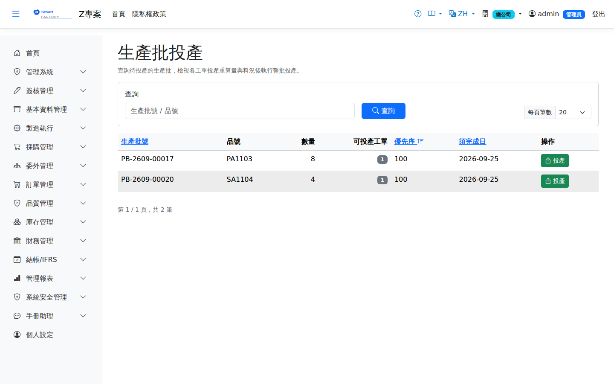

生產批投產Batch Release
路由：/BatchRelease | 整批釋出工單進入排程與派工Route: /BatchRelease | Releases a whole batch of work orders into scheduling and dispatch
投產是「計畫 → 執行」的閘口：將生產批內的工單釋出，系統建立派工單（自工序帶入機台、模具需求）、做廠級物料預留，並使工單進入排程凍結保護（凍結期內 MRP 重跑不會移動）。Release is the gate between planning and execution: the work orders in the batch are released, the system creates dispatches (pulling the machine and tooling requirement from the operations), reserves material at plant level, and puts the work order under schedule freeze protection (an MRP re-run will not move it while it is frozen).

生產批投產畫面截圖（示意，實際欄位/資料依權限與查詢條件而異）Batch release screenshot (illustrative; actual fields and data vary by permission and query criteria)
作業流程Process
投產Release
1
選擇生產批，檢視批內工單與料況（齊套/待料風險）。Choose a production batch and review the work orders in it and their material status (kitted or at material risk).
2
確認後點「投產」；系統逐張建立派工單與物料預留。需要簽核的工單會送審，核准後才能排程與開工；若有工單超過簽核門檻（或符合強制送審條件）但本廠沒有工單簽核流程，會直接核准並跳出提醒列出這些工單，請確認簽核設定。Confirm and click "Release"; the system creates the dispatches one by one and reserves the material. Work orders that need approval are submitted and can be scheduled and started only after approval. If a work order is above the approval threshold (or meets a mandatory approval condition) but this plant has no work order approval flow, it is approved directly and a reminder lists those work orders so you can check the approval settings.
3
投產後至「生產排程」檢視/調整機台安排。After release, review and adjust the machine assignment under "Production Scheduling".
重算為 0 不能投產：投產當下的可用量已經滿足毛需求（例如成品庫存已足），重算後的生產量是 0，代表這張工單不需生產。系統會擋下並說明，請改按「作廢」。整批投產時，這張工單連同它底下的半成品子工單一起略過，其餘照常投產，結果訊息會列出略過的工單。A work order recalculated to 0 cannot be released: the quantity available at release already covers the gross demand (for example there is enough finished stock), so the recalculated quantity is 0 and nothing needs to be produced. The release is blocked with an explanation; void the work order instead. In a batch release, that work order and the semi-finished child orders under it are skipped, the rest are released as usual, and the result message lists the skipped orders.
整批一起投，不會只投一部分：批內任一張工單缺料，整批都不投；投產途中任一張出錯，整批也都不投，已處理的工單會一起退回已規劃，不會留下送審中的簽核。依畫面訊息排除原因後，再按一次「投產」即可。A batch is released as a whole, never partly: if any work order in the batch is short of material, nothing is released; if any work order fails during release, nothing is released either. Orders already processed go back to Planned and no approval request is left behind. Fix the cause shown in the message and click Release again.
抵掉需求的庫存會保留給原訂單：投產重算用現有成品抵掉的量（含重算為 0 的整張），會自動保留給這張工單的來源訂單，別的出貨或工單不能動用；出貨時才扣掉。半成品子工單則保留給上階工單，上階工單發料時扣掉。手動建立、不是 MRP 展開的工單沒有來源訂單，不保留。Stock that covers the demand is held for the original order: the finished goods counted against the demand at release (including the whole quantity when the result is 0) are reserved for the order behind this work order. Other shipments and work orders cannot use them, and the reservation is used up when that order ships. For a semi-finished child order the stock is held for the parent work order and used up when the parent is issued. Work orders entered by hand, not created by MRP, have no source order and reserve nothing.
欄位說明Field reference
查詢條件Query criteria
| 條件Condition | 說明Guide |
|---|---|
| 查詢Search | 生產批號或品號的模糊比對；清單只列出待投產的生產批Partial match on the batch number or item; the list shows only batches waiting to be released |
待投產清單Release queue
| 欄位Field | 說明Guide |
|---|---|
| 生產批號 / 品號 / 數量Batch No / Item / Qty | 待投產的生產批基本資訊Basic details of the production batch waiting to be released |
| 可投產工單Releasable WOs | 本批底下通過料況與前置檢核、可以放行的工單數Number of work orders in the batch that pass the material and lead-time checks and can be released |
| 優先序Priority | 投產的先後順序Order in which they are released |
| 須完成日Due Date | 本批的需求完成日Required completion date of the batch |
投產面板欄位Release panel fields
| 欄位Field | 說明Guide |
|---|---|
| 工單Work order | 本批展開出的各張工單The work orders produced by this run |
| 暫定量Provisional qty | MRP 展開當時預估的工單數量Work order quantity estimated at the time of the MRP run |
| 重算量Recalculated qty | 投產當下依最新庫存、在途與良率重新計算的實際投產量；與暫定量落差即需注意The quantity actually released, recalculated at release time from the latest stock, in-transit quantity and yield; a gap against the provisional quantity is worth looking at |
| 判定Result | 該工單能否投產的檢核結果（料況足夠／缺料／前置工序未完成等），不通過者不隨整批放行Result of the release check on the work order (enough material / short / an earlier operation unfinished …); those that fail are not released with the batch |
相關畫面Related screens
生產排程Production Schedule、生產準備看板Preparation Board
注意：Note:料況不足的工單仍可投產但會標示待料風險；請於生產準備看板追蹤到料情形。 A work order that is short of material can still be released but is flagged as a material risk; track the arrivals on the production preparation board.